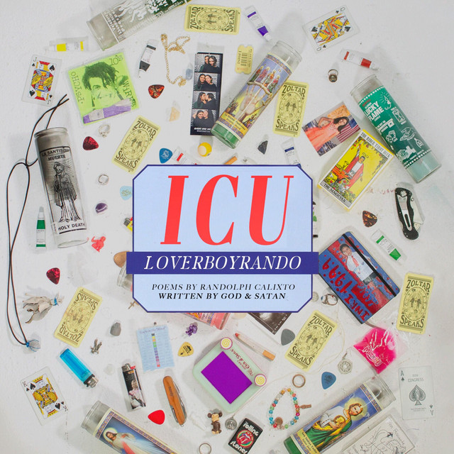
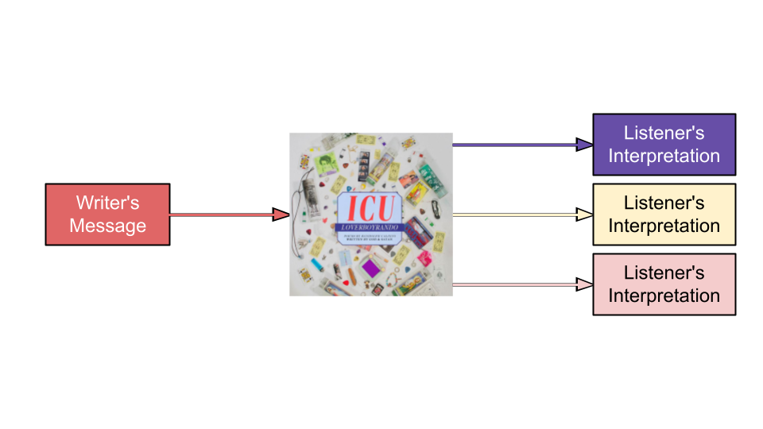

Does Music Disable the Reader?

A New Realization
After digging deep into Loverboyrando's song lyrics this week, I have started to realize some connections to "Enabling the Reader" by Kefaya Diab. Diab believes that issues with literacy can usually be blamed on the writer rather than reader. In other words, it is the job of the writer to create content in a way that is specialized for their audience. One of the main ways this can be accomplished is simply through word choice and writing style. Because of this, I was surprised when reading the complex lyrics in 666 by Loverboyrando.
At first, it seemed like the lyrics were promoting disabling the reader, just as Diab had explained. As I continued to interpret the lyrics, I became more comfortable with them. Meaning began to shine through the cracks of the mysterious lines. At the end of my analysis, I was not able to fully grasp every exact detail of the song. Despite this, I had actually taken away something more meaningful. I was actually enabled by the lyrics because they allowed me to apply my own interpretations. I left with a sense of gathered emotions rather than gathered information.
Revision and Power Dynamics
I would like to pay more attention to song lyrics from now on, and I would enjoy analyzing another song. I can use what I have learned to revise my song analysis strategies. When thinking about songs in the future, I will try to focus more on what meaning comes naturally to me, instead of the meaning that the singer had in mind.
I have also noticed a possible power dynamic involved with analyzing song lyrics. I believe that songs gather more attention if their meaning is unclear. There would be no point in analyzing a song if the main message was stated directly.